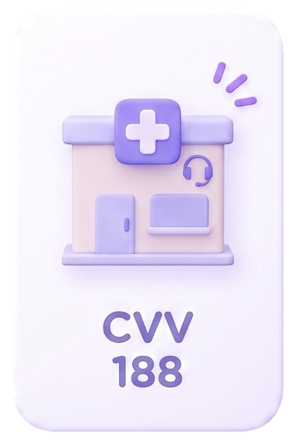
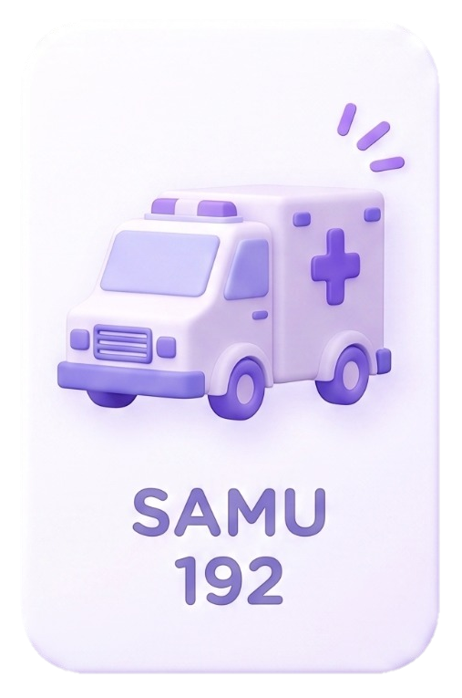
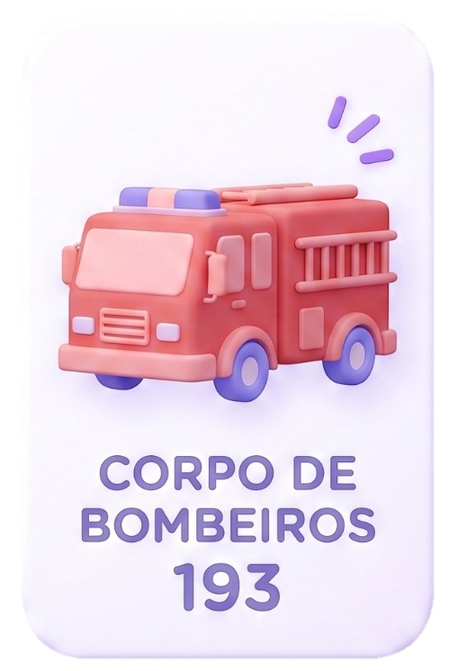

Oferece apoio emocional e prevenção ao suicídio. O atendimento é gratuito, sigiloso e funciona 24 horas por dia, todos os dias da semana. Você também pode ser atendido por chat ou e-mail através do site: cvv.org.br.

Deve ser acionado em casos de emergência psiquiátrica aguda, como surtos, crises de ansiedade severas ou quando há risco imediato à vida da própria pessoa ou de terceiros. A equipe conta com profissionais preparados para fazer o resgate e o primeiro atendimento.

Assim como o SAMU, os bombeiros devem ser acionados para resgates urgentes em que há risco iminente à integridade física de alguém.
